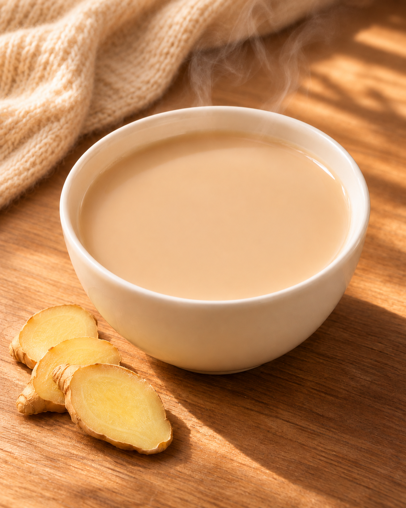
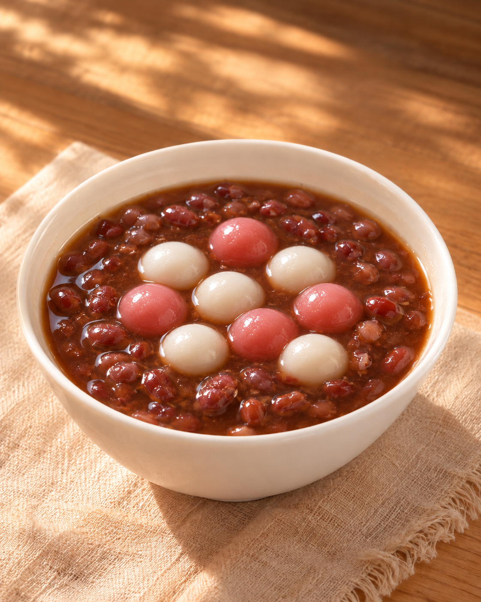

冬季限定，12 月開賣
東北季風吹起，麥寮的天氣一轉涼，下午茶或宵夜時段總想來點熱呼呼的飲品或甜湯。在地手搖品牌 MY CHA 推出冬季限定系列，預計於 12 月正式開賣，一次帶來 桂圓紅棗茶、薑汁奶茶、湯圓燒仙草、紅豆湯圓 四款暖心品項，無論你想在辦公室喝杯溫潤熱茶，還是想來碗料多飽足的紅白湯圓甜湯，都能在 MY CHA 一次滿足。
四款冬季限定
冬季限定系列包含以下四款品項，皆為現點現做，供應情形以 MY CHA 官方公告為準：
1. 桂圓紅棗茶

桂圓紅棗茶以桂圓的蜜香與紅棗的果香為特色，入口溫潤，尾韻清甜。喜歡果香與清甜口感的人，可以從這款開始選起。午後休息或下班後，搭配一份點心，享受自己的茶飲時光。
2. 薑汁奶茶

薑汁奶茶將奶茶的醇厚與薑汁的微辛結合，入口先感受到奶香，接著是薑汁的辛香，讓熟悉的奶茶多了一層風味。喜歡奶茶，也想嘗試不同口味的人，可以在冬季下午茶時選擇這一杯。
3. 湯圓燒仙草

湯圓燒仙草以仙草的草本香氣，搭配紅白小湯圓的軟糯口感。滑順湯底與帶有嚼勁的湯圓，讓每一口都有不同的層次。下午想吃點甜食，或冬至想來一份湯圓甜湯，都可以選擇這款。
4. 紅豆湯圓

紅豆湯圓將綿密的紅豆與軟糯的紅白小湯圓搭配在一起，豆香與米香相互交織。喜歡紅豆甜湯，也喜歡湯圓嚼感的人，可以選擇這款經典組合，作為飯後甜點或晚間點心。
品項與口感
桂圓紅棗茶
口感：溫潤清甜、桂圓蜜香與紅棗果香
享用時機：午後休息、下班後搭配點心
薑汁奶茶
口感：奶香醇厚、薑汁微辛
享用時機：冬季下午茶、想換換奶茶口味時
湯圓燒仙草
口感：仙草滑順、紅白湯圓 Q 彈
享用時機：下午點心、冬至享用
紅豆湯圓
口感：紅豆綿密、湯圓軟糯
享用時機：飯後甜點、晚間點心
預訂與外送

MY CHA 冬季飲品預計 12 月開賣，因冬季熱飲與湯圓皆為現點現做，建議先透過官網線上預訂，省去現場吹風等候的時間：
- 門市現場購買：歡迎直接至 MY CHA 門市點餐，現點現煮需稍候片刻。
- 六輕廠區外送：單筆滿 10 碗（杯）以上，可安排於 中午 11:00 左右進廠外送，適合廠區部門午餐團購、飯後甜點。
- 麥寮附近村莊外送：包含 橋頭、施厝、新吉、雷厝、三盛 等地區，單筆滿 300 元 即可安排外送。
- 預訂時間提醒：無論是六輕進廠或周邊村莊外送，請務必 至少提前 1 小時預訂，方便門市提前熬煮備料。
常見問題
Q1：六輕中午團購最晚幾點前要預訂？
由於冬季甜湯與熱飲皆為現煮製作，若希望安排中午 11:00 左右進廠外送，建議最晚於 早上 10:00 前（至少提前 1 小時）透過 MY CHA 官網或電話完成預訂。
Q2：甜度可以調整嗎？
可以！在官網線上點餐時，可於備註欄填寫偏好的甜度需求（如微糖、半糖），門市會依實際配方為您微調。
Q3：除了冬季限定款，外送可以一起搭配 MY CHA 的招牌純茶或鮮奶茶嗎？
可以的！外送滿額門檻（六輕滿 10 杯／周邊村莊滿 300 元）皆可與官網菜單上的其他飲品自由混搭湊單，一次滿足同事或家人的不同口味。